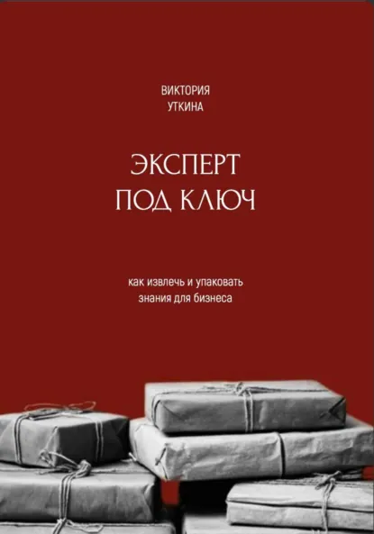

Собственникам и топ-командам: повышаю точность и скорость принятия стратегических решений, чтобы крупная ставка приносила прибыль, а не потерю инвестиций.
Владелица агентства «Без Воды». 20 лет в сфере обучения взрослых. С 2012 года — корпоративный управленческий опыт: работа с клиентами, управление продуктом, командой и бюджетами.
Telegram-канал20+ компаний-клиентов
Любой продукт должен приносить прибыль бизнесу и результат для вас. Иначе это не продукт, а потеря инвестиций.
Big Bet — крупная ставка. Инвестиция, выход на новый рынок или реструктуризация, когда цена ошибки слишком высока, чтобы принимать решение на основе ощущений.
Скорость и точность решений. Быстрые и обоснованные заключения: подготовка за часы вместо недель, и CEO принимает их с первого раза.
Новые рынки и сегменты. Пространство спроса, в котором пока нет конкурентов: новые группы клиентов и сценарии.
Рычаги роста без раздувания штата. Рост за счёт архитектуры и приоритетов, а не найма.
Быстрое вхождение в новую роль. Инструменты управления процессами на уровне крупных финансовых показателей и ROI.
«Стратсессия 360»: рынок, смежные отрасли и сценарии за пределами привычного поля зрения. Преворк делают ИИ-агенты — команда тратит время на решения, а не на подготовку.
Подробнее о продукте → 02ИИ-агенты автоматизируют предварительный сбор информации и анализ полученных данных. Руководитель не тратит на это время, а фокусируется на главном: принятии стратегических и управленческих решений.
Подробнее о продукте → 03Системное и критическое мышление, структурированная коммуникация (Минто, SCQA, 6-pager), управление изменениями. Модульные программы для CEO-1 и CEO-2.
Подробнее о продукте → 04Курсы-продукты в партнёрстве с топ-менеджерами и экспертами ниши: от распаковки экспертизы до окупаемости на этапе MVP.
Подробнее о продукте →
Литрес, 2025
Книга систематизирует 20 лет практического опыта и предлагает фреймворк для извлечения и упаковки экспертных знаний в продукты для рынков B2C и B2B.
Читать на ЛитресАгенты работают на обезличенных данных. Информация, составляющая коммерческую тайну, маскируется до передачи в алгоритм — чувствительные данные не передаются алгоритму в открытом виде, что предотвращает риск их утечки.
Клиенты компании: Ozon, Danone, МТС, JTI, Газпромбанк, Лента, Leroy Merlin, Контур и другие. withoutwater.ru